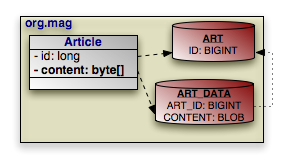

2.13.8.2. Secondary Tables
Sometimes a logical record is spread over multiple database tables. JPA calls a class' declared table the primary table, and calls other tables that make up a logical record secondary tables. You can map any persistent field to a secondary table. Just write the standard field mapping, then perform these two additional steps:
-
Set the
tableattribute of each of the field’s columns or join columns to the name of the secondary table. -
Define the secondary table on the entity class declaration.
You define secondary tables with the SecondaryTable annotation.
This annotation has all the properties of the Table annotation covered in Table , plus a pkJoinColumns property.
The pkJoinColumns property is an array of PrimaryKeyJoinColumns dictating how to join secondary table records to their owning primary table records.
Each PrimaryKeyJoinColumn joins a secondary table column to a primary key column in the primary table.
See Joined above for coverage of PrimaryKeyJoinColumn's properties.
The corresponding XML element is secondary-table.
This element has all the attributes of the table element, but also accepts nested primary-key-join-column elements.
In the following example, we move the Article.content field we mapped in Basic Mapping into a joined secondary table, like so:

package org.mag;
@Entity
@Table(name="ART")
@SecondaryTable(name="ART_DATA",
pkJoinColumns=@PrimaryKeyJoinColumn(name="ART_ID", referencedColumnName="ID"))
public class Article {
@Id private long id;
@Column(table="ART_DATA")
private byte[] content;
...
}And in XML:
<entity class="org.mag.Article">
<table name="ART"/>
<secondary-table name="ART_DATA">
<primary-key-join-column name="ART_ID" referenced-column-name="ID"/>
</secondary-table>
<attributes>
<id name="id"/>
<basic name="content">
<column table="ART_DATA"/>
</basic>
...
</attributes>
</entity>